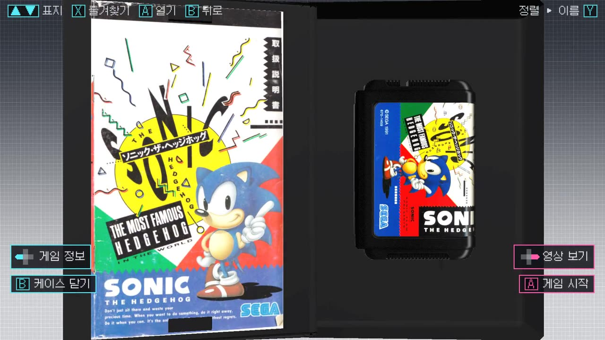

HB LAUNCHER
해방 게임 런처
HB LAUNCHER
해방 게임 런처
케이스를 열고, 꽂고, 플레이.
게임 케이스를 3D 진열장에 늘어놓고, 마음에 드는 케이스를 돌려 보고, 열어서 카트리지를 꺼내 콘솔에 꽂으면 — 게임이 시작됩니다. 어릴 적 그 감각 그대로의 에뮬레이터 런처를 만들고 있습니다.
게임을 '고르는 것'부터 놀이가 되도록
텍스트 목록에서 파일명을 고르는 대신, 장식장에서 게임을 꺼내는 경험을 그대로 옮깁니다.
기종을 고르고
쌓아 둔 케이스 더미와 기종 로고로 50개 기종을 넘긴다
앞뒤로 살펴보고
한국어 제목·발매연도와 함께, 앞표지에서 뒷표지까지 굴려 본다
케이스를 열면
기종마다 실물처럼 — 클램셸·종이곽·쥬얼케이스·빅박스
넣으면 시작
카트리지·디스크·UMD·게임카드를 실물 규격 그대로 꺼내 꽂는다
지금 이만큼 만들어졌습니다
아래 영상과 이미지는 목업이 아니라 개발 중인 빌드를 그대로 녹화한 실제 화면입니다.





* 베타 0.5 빌드의 실제 화면입니다. 기종마다 실물 케이스 구조와 매체(카트리지·디스크·UMD·게임카드)를 실제 치수(mm)대로 만듭니다. Windows에서 RetroArch 실행, 안드로이드 핸드헬드 실기기(60fps) 구동까지 검증되었습니다.
이번 빌드에서 달라진 것
- 여러 게임기의 모델·텍스처와 본체 표시 크기를 다듬었습니다.
- NES 카트리지·PSP UMD 를 입체로 만들고, 삽입·배출 동작을 보정했습니다.
- 내장 화면 영상 재생, 게임 시작·종료 때의 확대와 잡음 연출을 개선했습니다.
- A/B 버튼 안내, 영상에서 바로 게임 시작, 빠른 뒤로 가기 오류 수정.
- 에뮬레이터 목록을 해방툴 기준으로 갱신했습니다.
보기만 예쁜 런처가 아닙니다
RetroArch 기본 + 확장 연결
RetroArch를 기본 호환으로 하고, 시스템별 스탠드얼론 에뮬레이터는 연결 정보를 통해 추가합니다. 새 에뮬레이터 대응은 앱 업데이트 없이 데이터 갱신만으로 이뤄지도록 설계하고 있습니다.
해방툴과 다이렉트 연결
안드로이드 기기에 HB런처가 있으면 해방툴이 롬과 미디어를 기기로 바로 밀어 넣습니다. 해방툴에서 세팅한 라이브러리는 매칭 과정 없이 즉시 진열장이 됩니다.
해방툴이 다루는 50개 기종 전부
패미컴·메가드라이브부터 PC엔진·새턴·PS1, GBA·원더스완·네오지오 포켓, DOS·아미가 빅박스까지. 기종마다 케이스 형태와 매체가 다르고, 같은 기종 안에서도 판본에 따라 상자가 달라지는 것까지 반영합니다.
게임패드 우선 · 핸드헬드 우선
모든 조작을 패드 버튼만으로. 안드로이드 게임 핸드헬드의 저사양 GPU에서도 부드럽게 돌도록 처음부터 가볍게 만들고 있습니다.